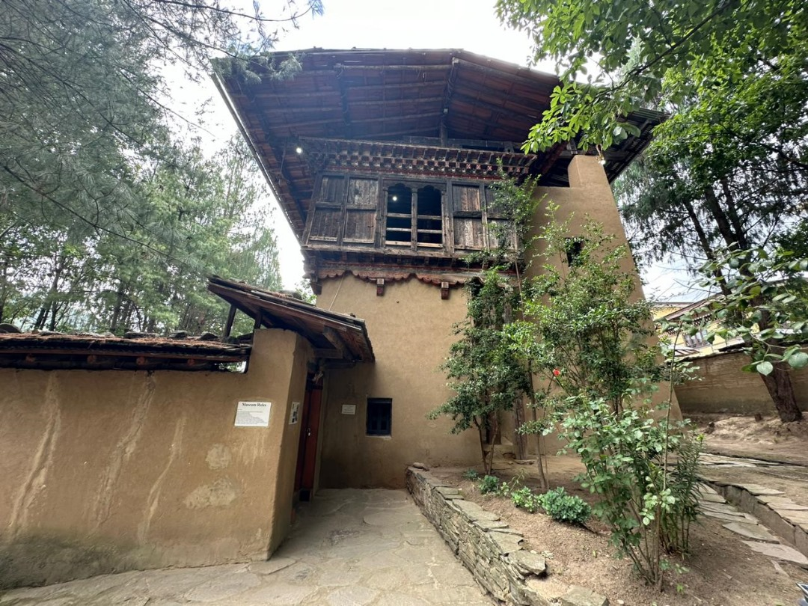
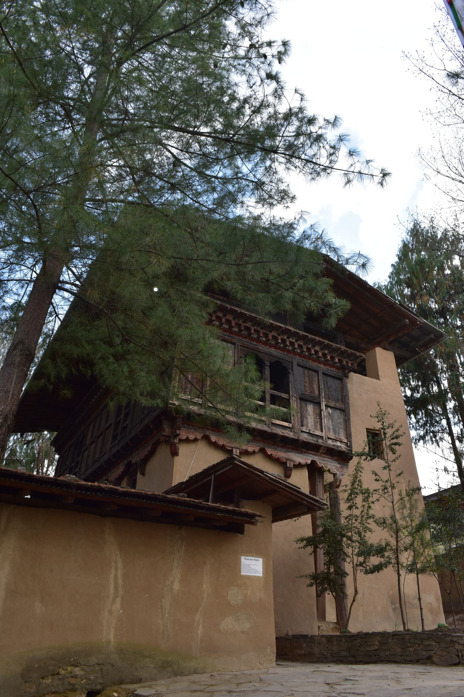
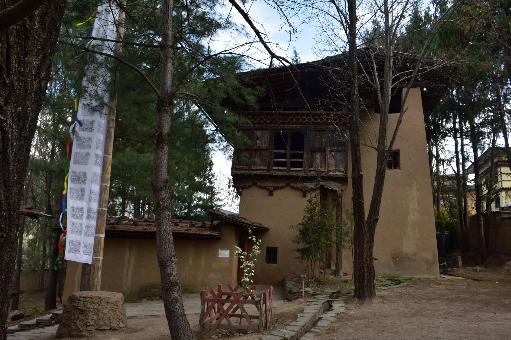
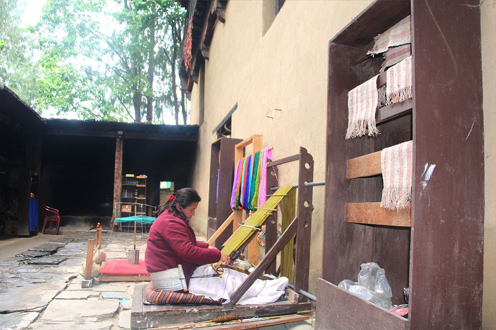
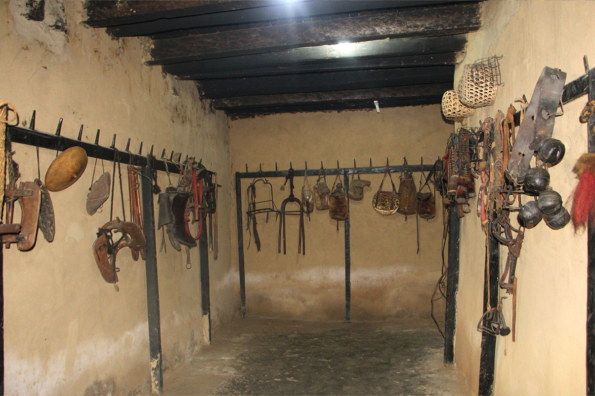
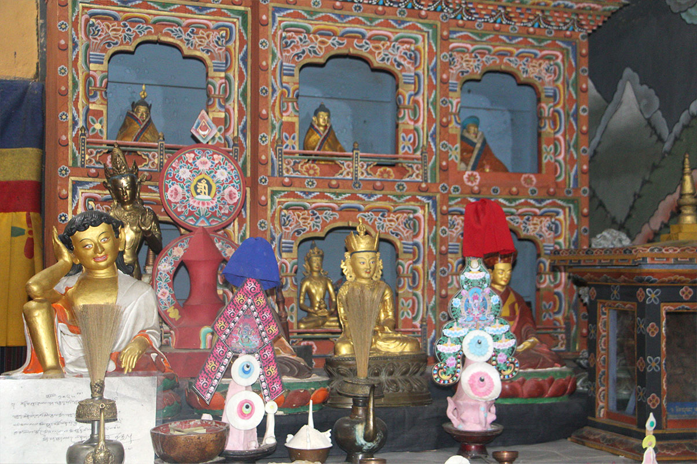
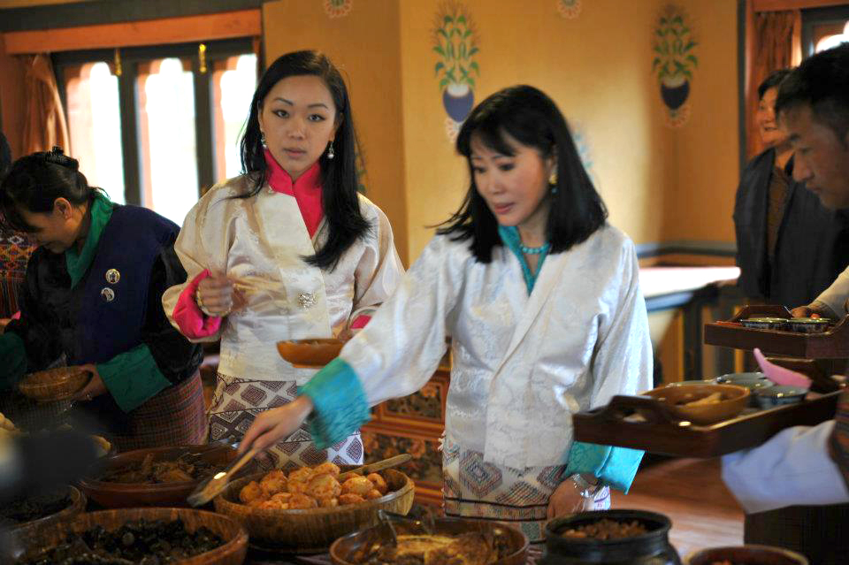

Our Story
About
Phelchey Toenkhyim — a living record of Bhutan's rural past, founded in 2001 under the patronage of Her Majesty the Queen Mother.

Founding — 28 July 2001
Phelchey Toenkhyim
The Folk Heritage Museum, also known as Phelchey Toenkhyim, was established through the initiative of Her Majesty Ashi Dorji Wangmo Wangchuck, the Queen Mother of Bhutan. Dedicated to connecting people to Bhutan's rural past, the museum offers exhibits, demonstrations, educational programs, and documentation of rural life. Her Majesty is both the founder and patron of the museum.
The House & Grounds
150 years of rural life.
Although the Folk Heritage Museum is a relatively new institution, the building itself is over 150 years old, making it a vital link to Bhutan's history. The museum's well-preserved rural setting includes paddy, wheat, and millet fields, a traditional water mill with millstones, and a kitchen garden with vegetables grown over the past century. Visitors can also experience a traditional hot stone bath and see native trees and plants used in Bhutanese rural households, cultivated here to preserve indigenous knowledge and maintain a green space in the heart of Thimphu.
The principal exhibit is the restored three-storey traditional rammed mud and timber house, dating back to the mid-19th century. Its form and design reflect a conventional household from the Wang area of that era, offering a vivid glimpse into Bhutan's rural heritage.


First Impressions
A working farmhouse.
Visitors enter the farmhouse through a small, partially covered stone courtyard used to store firewood, farming equipment, and grain. An incense burner for daily offerings to protective deities is also located here. The ground floor resembles a barn, as it houses farm animals during Bhutan's harsh winters.
Steep, open-tread timber stairs lead to the next two levels. The second level primarily serves as storage for grain and food. The third level is the heart of the home, featuring the family's living and dining area — the only level with heating, provided by a wood-fired stove in the kitchen, where the entire, often large, family would sleep.
Our Vision
Living
Heritage
To preserve the cultural heritage and portray rural folk life of the Bhutanese people.
Our Mission
How we carry it out.
01
Conserve & Educate
To conserve, educate and enhance appreciation of rural life of Bhutan through exhibitions and educational tours.
02
A Living Museum
To create a thriving museum experience for the guests.
Room by Room
Inside the Manor
Step into a realm where tradition and craftsmanship are revered and preserved — a walk through the farmhouse, floor by floor.

01 — Entrance
An Entrance with a Story
Showcasing the timeless skills and profound ingenuity of Bhutan's rural artisans from past centuries, the Folk Heritage Museum invites you to step into a realm where tradition and craftsmanship are revered and preserved. As you cross the threshold, you are greeted by an array of artifacts, each whispering tales of a bygone era.
Upon entering, you will encounter a hearth where fragrant incense is burned daily, sending tendrils of smoke heavenward in homage to protective deities. Nearby, a water-propelled stone mill stands as a testament to the resourcefulness of our ancestors, tirelessly grinding grains with the gentle power of flowing water. Not far from this marvel, a water-driven prayer wheel turns endlessly, invoking blessings and fortitude. Lastly, the Fortress of the Subterranean Beings — an enigmatic structure shrouded in mystery — offers a glimpse into the mystical and the sacred.
02 — Ground Floor
A Symphony of Function
The ground floor of this historic abode houses three distinct rooms that pulse with the rhythms of rural life. The front room stores an array of equipment — leather bags, pouches, rugs, sacks, ropes, hats, saddles, stirrups and myriad other odds and ends — all essentials for the animals, particularly the beasts of burden.
The main room inside is reserved for pregnant cows, milking cows, and animals needing special attention, sometimes even a haven for pigs and piglets. The farmyard manure produced here sustains the fertility of the fields: leaves collected from the forests, paddy straw and agricultural biomass are layered as bedding, and together with animal waste, decompose into the organic manure spread across the paddy fields each spring before planting.
Adjacent to this room is a dedicated space for calves, known affectionately as Buchung-go ray — a symbol of continuity and the promise of future harvests.


03 — Middle Floor
Barthog
This floor, with its two rooms, serves as the heart of household storage. Wooden boxes and baskets coexist with wine and spirit containers crafted from bamboo and buffalo horns. Butter and cheese containers, mortars and pestles for crushing chili and spices, carpentry tools, traditional stitching equipment, and implements for traditional sports lie in gentle repose.
The room at the back is a sacred vault for grain, particularly the cherished red rice, stored either in large wooden containers called bham or in huge baskets known as luep. This room is also a custodian of Bhutanese scientific measuring systems — phita and dre, alongside the three standard weighing scales: sang, goe, and tirusangchung.
The roofs of these homes, crafted from pine shingles, slope gently and are ingeniously designed to withstand Bhutan's fierce winter winds. Stones, placed at regular intervals on laths across the loose shingles, secure them firmly — a simple yet effective technique that keeps the roof intact even during the most severe windstorms.
04 — Top Floor
Kitchen, Hearth & Altar
The room at the back is the heart of the household, the thabtshang (kitchen). Copper spoons and ladles glint softly in the light, a spinning wheel hums with the promise of creation, and baskets alongside ladles speak of hands skilled in nurturing. A spice mortar and a wooden buckwheat noodle machine transform humble ingredients into meals that nourish both body and soul.
The two rooms at the front are realms of living and spirituality. The Baryap (living area) welcomes guests with small carpets and walls adorned with Bhutanese motifs; decorated boxes and cabinets display swords, scarves and clothing, each piece telling its own story.
Every Bhutanese home treasures an altar room, the Choesham — the spiritual heart of the household, where daily offerings of water and butter lamps are made. The altar room houses sacred objects: the Drum (Nga) and the oboe-like Gyaling, Cymbals (Gsilsnyen), the Thunderbolt and Bell (Dorji & Dribu), and the Conch Shell (Dungkar).


05 — Exit
The Way Out
Two pathways lead the wanderer onward. Through the first, the Folk Heritage Restaurant awaits, along with an artisanal, handmade machine used to extract mustard oil — roasted mustard seeds are pounded and steamed, then pressed by a wooden lever within a sturdy basket, the amber oil trickling into an earthen vessel below.
Through the second, the Folk Heritage Museum shop offers books, postcards, masks, traditional Bhutanese clothing, woven baskets and carved wooden bowls — many of them replicas of artifacts held within the Museum's halls, available exclusively here as tokens of a journey through time and tradition.
View the Collection →Walk through it yourself.
Room by room, Phelchey Toenkhyim is best understood in person.
Plan your visit →